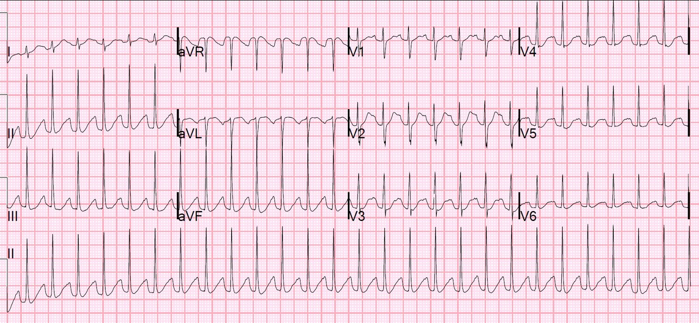
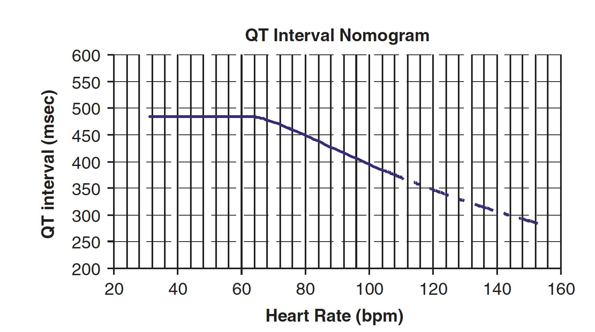
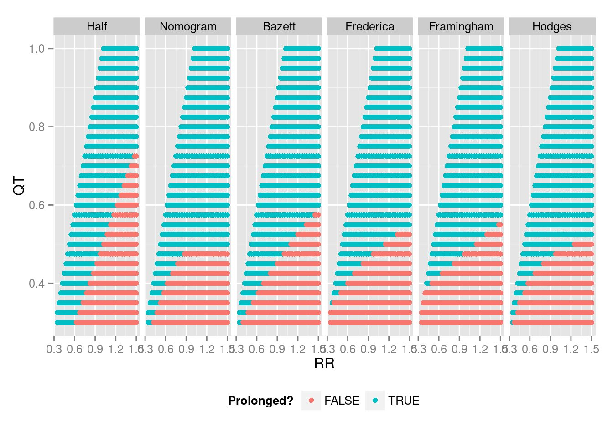
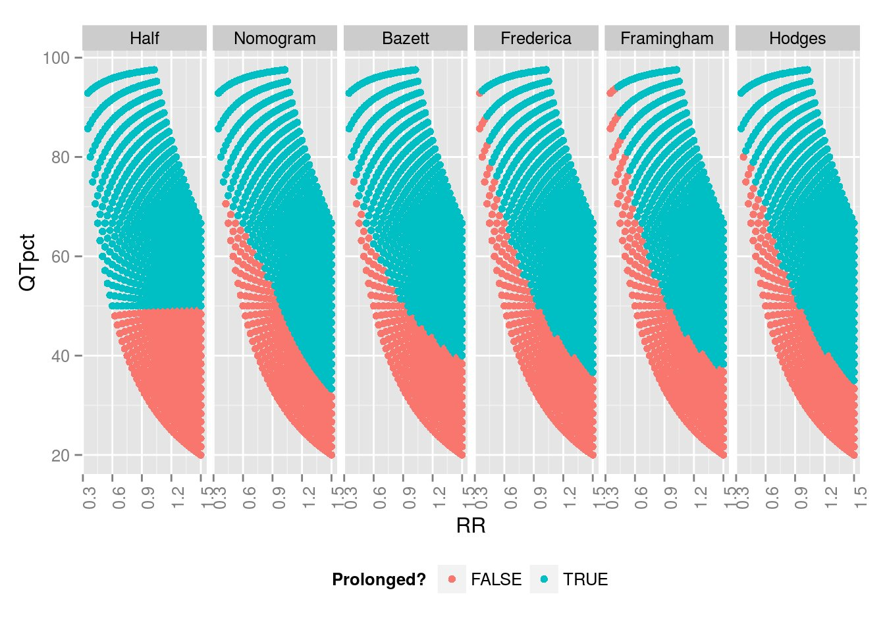
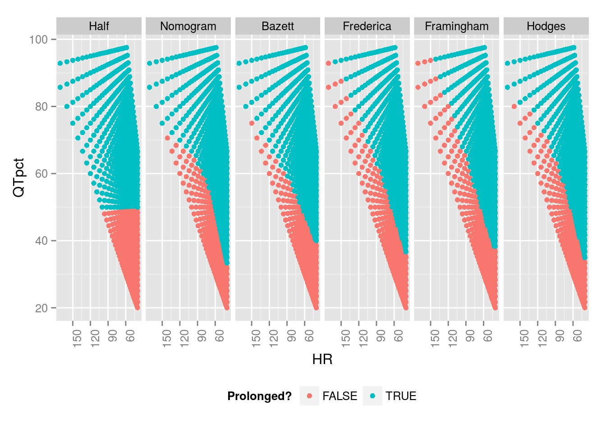
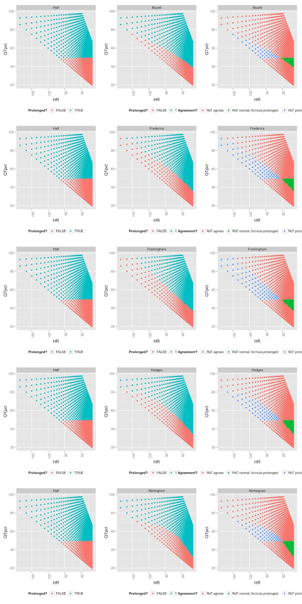
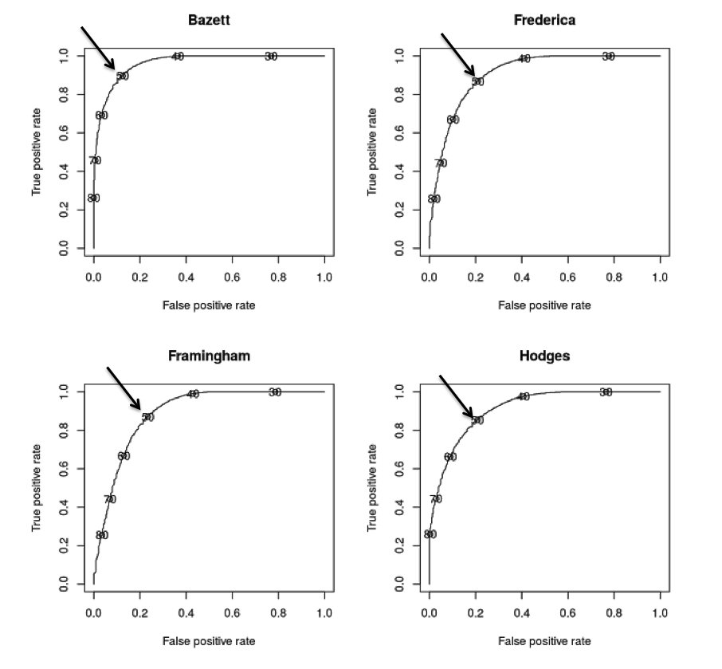
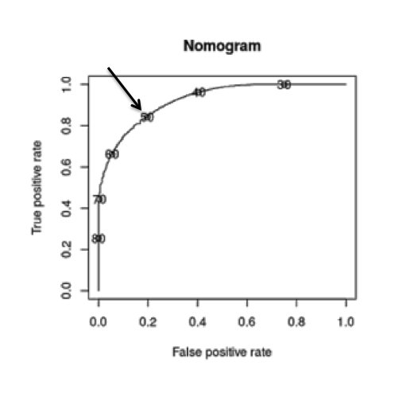

24/11/2017 — Các công thức hiệu chỉnh QT so với quy tắc kinh nghiệm (“Một nửa RR”)
Bản dịch tiếng Việt của bài "QT Correction Formulas Compared to The Rule of Thumb (“Half the RR”)" – Dr. Smith’s ECG Blog. Giữ nguyên toàn bộ 8 hình ảnh của bản gốc.


Tuy nhiên, công thức Bazett được biết là cho ra QT hiệu chỉnh kéo dài giả tạo ở tần số tim nhanh. Vậy QT có thực sự kéo dài không? Làm sao chúng ta biết?
Trả lời: bạn phải điều trị bệnh lý nền của bệnh nhân gây ra nhịp nhanh xoang, và ghi lại điện tâm đồ khi tần số tim đã thấp hơn.
Tài liệu cần đọc:
Liên kết toàn văn:
AHA/ACCF/HRS Recommendations for the Standardization and Interpretation of the Electrocardiogram, Part IV: The ST Segment, T and U Waves, and the QT Interval (liên kết toàn văn; Khuyến cáo của AHA/ACCF/HRS về chuẩn hóa và diễn giải điện tâm đồ, Phần IV: đoạn ST, sóng T và U, và khoảng QT).
—-Các phần cuối của bài báo này nói về khoảng QT và là tài liệu cần đọc:
Dưới đây là một số điểm then chốt (pearl) từ bài báo này trước khi chúng ta bắt đầu:
1. Những vấn đề lớn nhất với khoảng QT là:
a) Nhận ra điểm khởi đầu của QRS và điểm kết thúc của sóng T
b) Xác định các chuyển đạo phù hợp để đo
c) Điều chỉnh QT theo sự gia tăng thời gian QRS, theo giới tính và tần số tim
(Với LBBB, Dodd và Smith đề xuất dùng khoảng từ đỉnh T đến cuối T, với giá trị > 85-100 ms là kéo dài)
2. Nên dùng QT dài nhất trong 12 chuyển đạo. Thường là V2 hoặc V3.
3. Không đo QT ở bất kỳ chuyển đạo nào bị che lấp, đặc biệt là bởi sóng U. Các chuyển đạo aVR và aVL ít có khả năng biểu hiện sóng U nhất.
4. Bắt buộc phải kiểm chứng bằng mắt các khoảng QT do thuật toán máy tính báo cáo, vì chúng thường không chính xác, đặc biệt khi QT kéo dài. Xem bài tổng quan này về điện tâm đồ được máy tính diễn giải.
5. Các công thức hiệu chỉnh Bazett và Fridericia có thể sai đáng kể, đặc biệt ở tần số tim nhanh.
6. Đặc biệt, công thức hiệu chỉnh Bazett có thể cho ra QT hiệu chỉnh kéo dài giả tạo ở tần số tim nhanh
7. Các hàm hồi quy tuyến tính theo khoảng R-R được giới thiệu gần đây chính xác hơn
8. Không nên hiệu chỉnh theo tần số khi khoảng RR biến thiên lớn, như trong rung nhĩ.
9. QT kéo dài thường được coi là 450 ms ở nam, 460 ms ở nữ.
10. QT kéo dài nguy hiểm là 480, đặc biệt là trên 500 ms.
11. Ngắn bất thường là dưới 390 ms. Các tác giả không nói nên dùng công thức hiệu chỉnh nào khi đánh giá các khoảng QT dài hoặc ngắn bất thường này.
Trong bài báo đó, các tác giả không nói thế nào là QT ngắn nguy hiểm (ví dụ hội chứng QT ngắn, SQTS). Tuy nhiên, theo các tiêu chuẩn chẩn đoán này (JACC 2011; 57(7):802), đó là QT hiệu chỉnh theo Bazett dưới 330-370, tùy thuộc vào các tiêu chuẩn chẩn đoán khác, bao gồm 1) tiền sử ngừng tim, 2) ngất đột ngột, 3) tiền sử gia đình có người ngừng tim đột ngột không rõ nguyên nhân trước 40 tuổi, 4) tiền sử gia đình có SQTS.
Một số điểm khác:
1. Các thuật toán máy tính tự động khác nhau (của các nhà sản xuất khác nhau) cho kết quả khác nhau
2. Các thuật toán tự động thường có phương pháp hiệu chỉnh độc quyền riêng mà họ sẽ không tiết lộ.
3. Các máy điện tâm đồ
kỹ thuật số hiện đại tính khoảng QT bằng cách chồng các chuyển đạo đã được căn chỉnh theo thời gian và chọn khoảng dài nhất,
nghĩa là QT tính được sẽ dài hơn số đo ở mọi chuyển đạo đơn lẻ, trừ một chuyển đạo. Các giá trị hiện được coi là bình thường đã được
thiết lập vào thời điểm các máy cũ đo khoảng QT trên từng
chuyển đạo riêng lẻ, và các giá trị này nhiều khả năng không tương quan với các khoảng QT
tính toán hiện đại.
·
Công thức
Fridericia: QTc = QT / √3(RR) (QT chia cho căn bậc ba của
khoảng RR)
·
Công thức
Framingham: QTc=QT+0.154*(1–RR)
·
Công thức
Hodges: QTc = QT + 1.75*(HR−60)
hay viết cách khác: = QT + 105/RR − 105
Cuối cùng, một toán đồ (nomogram) tương đối mới đã được công bố và đó có thể là cách tốt nhất để xác định, theo kiểu nhị phân, QT có kéo dài hay không. Đây là toán đồ đó:


Nếu tổ hợp này đặt bệnh nhân nằm dưới đường thì QT không kéo dài. Lưu ý rằng toán đồ này, ở tần số tim dưới 60, không làm cho QTc ngắn hơn QT! Điều này một lần nữa chỉ ra mối nguy của việc hiệu chỉnh ở tần số tim chậm!
Toán đồ hoạt động tốt đến mức nào trong nghiên cứu xây dựng (derivation) này? Độ nhạy và độ đặc hiệu của toán đồ QT lần lượt là 96.9% (KTC 95% 93.9–99.9) và 98.7% (KTC 95% 96.8–100). Với QTc Bazett = 440 ms, độ nhạy và độ đặc hiệu lần lượt là 98.5% (KTC 95% 96.3–100) và 66.7% (KTC 95% 58.6–74.7), trong khi với QTc Bazett =500 ms, các giá trị này lần lượt là 93.8% (KTC 95% 89.6–98.0) và 97.2% (KTC 95% 94.3–100).
Quy tắc kinh nghiệm (rule-of-thumb)
Với nền tảng đó
trong đầu, giờ đây chúng ta có thể chuyển sang quy tắc kinh nghiệm thường được sử dụng. Quy tắc này nói rằng để ước tính xem
QT có kéo dài hay không, người ta chỉ cần xác định khoảng QT
có chiếm hơn một nửa khoảng RR hay không.
Nhưng quy tắc này
có hiệu quả không, và trong những trường hợp nào chúng ta nên lo rằng nó cho một
ước tính quá ngắn hoặc quá dài?
Lý tưởng nhất, chúng ta sẽ khảo sát bằng cách
so sánh quy tắc kinh nghiệm với một công thức hoặc toán đồ tiêu chuẩn vàng đã được
hiệu chuẩn cẩn thận dựa trên một cơ sở dữ liệu lớn với kết cục là tử vong.
Mặc dù các quy tắc hiện có không được xây dựng dựa trên
kết cục tử vong, công thức hiệu chỉnh Bazett đã được dùng để liên hệ QTc dài với
kết cục trong các nghiên cứu được trích dẫn ở trên.
Thay vào đó, trong bài blog này
chúng tôi sẽ so sánh quy tắc kinh nghiệm với từng công thức trong bốn công thức, về thực chất là
lấy thực hành thường quy thay cho tiêu chuẩn vàng về kết cục vốn không thể có được.
So sánh quy tắc kinh nghiệm với các công thức
Để đánh giá mức độ đồng thuận giữa các quy tắc, chúng tôi xem xét các khoảng QT từ 300 ms đến 1000 ms, và các khoảng RR từ 350 ms đến 1500 ms. Chúng tôi không dùng bất kỳ dữ liệu người hay bệnh nhân nào; chúng tôi chỉ so sánh quy tắc kinh nghiệm với các công thức khác nhau, vốn có thể đã hoặc chưa được kiểm chứng tương ứng bằng dữ liệu sức khỏe (ví dụ, nguy cơ đột tử do tim).
Hình 1. Ở đây chúng ta có thể so sánh các công thức khác nhau, dùng điểm cắt 480 ms
để xác định khi nào QTc kéo dài. Công thức có tên “Half” (Một nửa) là
quy tắc kinh nghiệm cho rằng QT kéo dài nếu khoảng QT kéo dài hơn
một nửa khoảng RR.


Ngay lập tức, chúng ta đã thấy sự khác biệt giữa các quy tắc. Có thể thấy ở đây rằng quy tắc kinh nghiệm cho thấy QTc kéo dài với mọi QT từ 300 ms trở lên nếu khoảng RR dưới 0.6 (HR trên 100). Điều này trái ngược với các công thức, vốn có thể cho QTc trong giới hạn bình thường trong những trường hợp như vậy.
Quan trọng là, so với các công thức, ở tần số tim nhanh (RR thấp), quy tắc kinh nghiệm một nửa RR có xu hướng xếp quá nhiều QT là bất thường. Ở tần số tim chậm (RR cao), quy tắc kinh nghiệm có xu hướng xếp quá nhiều QT là bình thường.
Đây là một cách nhìn khác:
Chúng ta có thể vẽ cùng biểu đồ đó, nhưng với QT biểu thị dưới dạng phần trăm của RR, và đặt RR hoặc HR trên trục x.
Hình 2. Ở đây chúng tôi đặt RR trên trục x:


Bạn cũng có thể thấy rõ rằng ở tất cả các công thức khác: 1) Có nhiều trường hợp QT dài hơn một nửa RR, nhưng QTc vẫn bình thường theo công thức. 2) Ngược lại, có nhiều trường hợp QT ngắn hơn một nửa RR, nhưng lại kéo dài theo công thức.
Hình 3. Ở đây chúng tôi đặt HR (thay vì RR) trên trục x:


Đặt tỷ lệ phần trăm trên trục Y cho thấy
không thể có một công thức hoàn hảo dựa trên tỷ lệ phần trăm: nếu chúng ta dịch
đường ngang đó lên (bằng cách tăng tỷ lệ % của RR được
coi là kéo dài lên trên 50%), xét nghiệm sẽ nhạy hơn đối với QT kéo dài (ít âm tính giả hơn) nhưng phải trả giá bằng nhiều dương tính giả hơn (xếp nhiều cặp QT-RR là kéo dài trong khi chúng nằm trong giới hạn bình thường theo các công thức). Với tần số tim bình thường, từ 60-90, nhiều khoảng QT kéo dài theo các công thức lại KHÔNG kéo dài theo quy tắc kinh nghiệm.
Nếu không biết kết cục sức khỏe, không thể cân nhắc chính xác giữa
các ca bỏ sót và các ca chẩn đoán quá mức; không thể xác định điểm cắt
đúng nên là bao nhiêu. Một biểu đồ đường cong đặc trưng hoạt động
của bộ thu (receiver operating characteristic) trên tất cả các điểm cắt phần trăm khác nhau có thể
giúp cân nhắc những đánh đổi đó một cách chính thức hơn. Ngoài ra, lưu ý rằng có thể xây dựng một công thức cho biết khi nào mỗi công thức không đồng thuận với quy tắc kinh nghiệm, nhưng thực hiện bằng đồ thị thì cung cấp nhiều thông tin hơn, vì vậy đó là cách tiếp cận được dùng ở đây.
Các quy tắc kinh nghiệm (RoT) cho biết khi nào quy tắc kinh nghiệm đáng ngờ
Hình 4. Có vẻ như có một vùng mà quy tắc kinh nghiệm dường như
đặc biệt tốt. Điểm chuyển tiếp nằm ở đâu?
Để
xem xét chúng đồng thuận và không đồng thuận ở đâu, chúng tôi sẽ vẽ lại thành ba cột:
1. Cột
bên trái cho thấy những vùng quy tắc kinh nghiệm cho là kéo dài.
2. Cột
giữa cho thấy những vùng mỗi công thức cho là kéo dài.
3.
Cột bên phải cho thấy những vùng chúng không đồng thuận.
Chúng tôi sẽ vẽ bốn công thức, với HR trên trục X, và QT tính theo phần trăm RR trên trục Y. Bấm vào hình để xem kích thước đầy đủ.


Có
một dải tần số tim hẹp mà trong đó không thể sai được. Trên hoặc
dưới dải đó, sự đồng thuận có những điểm trục trặc.
Dưới 62 nhịp/phút, quy tắc kinh nghiệm đã không nhận ra QT kéo dài như
cả bốn công thức chỉ ra. Điều này xảy ra bất chấp thực tế là
QT dài nguy hiểm nhất khi nhịp chậm.
Ví dụ, ở tần số tim 40 nhịp/phút hoặc thấp hơn, cả 4 công thức đều coi một
QT chỉ kéo dài 40% RR là kéo dài. Ngược lại, trên 66 nhịp/phút,
quy tắc kinh nghiệm lại quá thận trọng. Ở 96 nhịp/phút, cả bốn quy tắc đều coi một QT
trải dài 60% khoảng RR là bình thường.
Kết luận
Chúng ta có thể nghĩ đến hai lý do để quan tâm đến khoảng QT kéo dài ở khoa cấp cứu (ED). Lý do thứ nhất là để thực hiện các biện pháp phù hợp nhằm ngăn ngừa nguy cơ cấp tính tiến triển thành xoắn đỉnh (TdP); lý do thứ hai là để tránh cho xuất viện một người có thể được xác định là có nguy cơ đột tử.
Là một công cụ sàng lọc ở tần số tim bình thường, có sự đồng thuận tốt giữa các công thức chính và quy tắc kinh nghiệm. Vì quy tắc kinh nghiệm thận trọng ở tần số tim cao hơn, và nguy cơ TdP cũng thấp hơn ở tần số tim cao hơn, việc quy tắc kinh nghiệm không cho thấy QTc kéo dài sẽ giúp yên tâm.
Mặt khác, quy tắc kinh nghiệm khi nhịp chậm dễ cho kết quả âm tính giả và có lẽ không nên dùng ở những tần số tim thấp này. Điều thú vị là công thức Bazett, vốn được dùng phổ biến nhất trong các công cụ tính trực tuyến và trong máy điện tâm đồ, lại kém thận trọng nhất ở những tần số tim thấp này (tức là, đây là công thức có khả năng cho QTc dưới 480 cao nhất ở tần số tim thấp, bất chấp tiếng là hiệu chỉnh chưa đủ của nó). Vì vậy, một QTc ở ngưỡng giới hạn trong bối cảnh nhịp chậm có thể kém yên tâm hơn so với các công thức khác.
Ngoài ra, các thuật toán máy tính không chính xác (Heart 1996;76:422-426) trong việc đo QT thô khi QT kéo dài, và những khó khăn trong việc đo được trình bày rõ trong bài báo của Drew và cs. Đây là một nghiên cứu khác cho thấy các thuật toán máy tính kém nhạy thế nào đối với QT dài (Pediatrics 2001;108:8 –12).
Khi QT trông có vẻ dài bằng mắt thường, phải đo bằng tay, bất kể máy tính đo được bao nhiêu.
Độ nhạy/Độ đặc hiệu và đường cong ROC
Một cách khác để xem xét vấn đề này là tiếp cận như thể chúng ta phải tự chọn tỷ lệ phần trăm của mình từ đầu. Thay vì bắt đầu với 50% (một nửa RR) làm quy tắc kinh nghiệm, chúng tôi sẽ tính mức độ đồng thuận giữa các quy tắc khác nhau và cả một dải quy tắc kinh nghiệm, mỗi quy tắc có một điểm cắt khác nhau.
Lưu ý rằng các chỉ số này phụ thuộc vào giá trị của quần thể, và vì chúng tôi đã tạo ra một quần thể giá trị một cách tùy ý, phân tích này tự bản chất đã có vấn đề. Dù vậy, khi không có dữ liệu về mức độ phổ biến của các cặp RR và QT ở khoa cấp cứu, khó mà làm tốt hơn.
Khi vẽ đường cong đặc trưng hoạt động của bộ thu (Receiver Operating Characteristic, ROC) so với từng công thức làm tiêu chuẩn vàng, và ghi nhãn các điểm cắt (tức là 50 đại diện cho quy tắc kinh nghiệm một nửa QT [người dịch: nguyên văn ghi “QT”, nhiều khả năng ý là RR]), chúng ta thấy rằng một nửa QT không phải là lựa chọn bất hợp lý so với 40% hoặc 60% của QT. Quy tắc này hoạt động đặc biệt tốt khi được đánh giá bằng công thức Bazett; đáng tiếc là, theo nhiều tiêu chí (xem y văn ở trên), công thức Bazett có thể là công thức kém chính xác nhất trong việc xác định nguy cơ liên quan đến QT.




Lưu ý rằng các chỉ số này phụ thuộc vào giá trị của quần thể, và vì chúng tôi đã tạo ra một quần thể giá trị một cách tùy ý, phân tích này tự bản chất đã có vấn đề. Dù vậy, khi không có dữ liệu về mức độ phổ biến của các cặp RR và QT ở khoa cấp cứu, khó mà làm tốt hơn.
Còn khoảng QT hiệu chỉnh trong blốc nhánh thì sao?
Một bài báo của Dr. Ken Dodd và Dr. Stephen W. Smith đăng trên International Journal of Cardiology cho rằng khoảng từ đỉnh T đến cuối T (TpTe) là chỉ số tốt nhất cho QT kéo dài. Trong bài báo này, các tác giả không hiệu chỉnh theo tần số. Nhiều khả năng điều này cũng áp dụng cho các rối loạn chậm dẫn truyền trong thất khác và cả RBBB. QT kéo dài là dài hơn 85 ms – 100 ms trong BBB.
Dodd KW và cs. Among patients with left bundle branch block, T-wave peak to T-wave end time is prolonged in the presence of acute coronary occlusion (Ở bệnh nhân blốc nhánh trái, thời gian từ đỉnh đến cuối sóng T kéo dài khi có tắc mạch vành cấp). Tháng Sáu 2016; 236:1-4
Bài báo này có phần bàn luận hay về các thuốc gây QT kéo dài
Emergency department approach to QTc prolongation (Cách tiếp cận QTc kéo dài tại khoa cấp cứu)
Xem các ca sau để thấy ví dụ về việc máy tính đo sai khoảng QT:
Chest Pain and a Very Abnormal ECG (Đau ngực và một điện tâm đồ rất bất thường)
Syncope and Bradycardia (Ngất và nhịp chậm)
Long QT: Do not trust the computerized QT interval when the QT is long (QT dài: Đừng tin khoảng QT do máy tính đo khi QT dài)
Xem ca này về VT đa dạng do QT dài mắc phải: